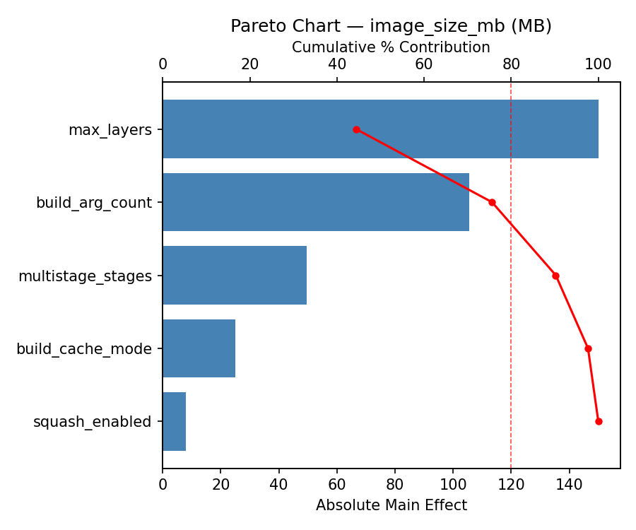
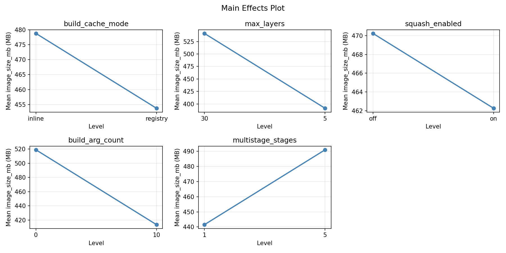
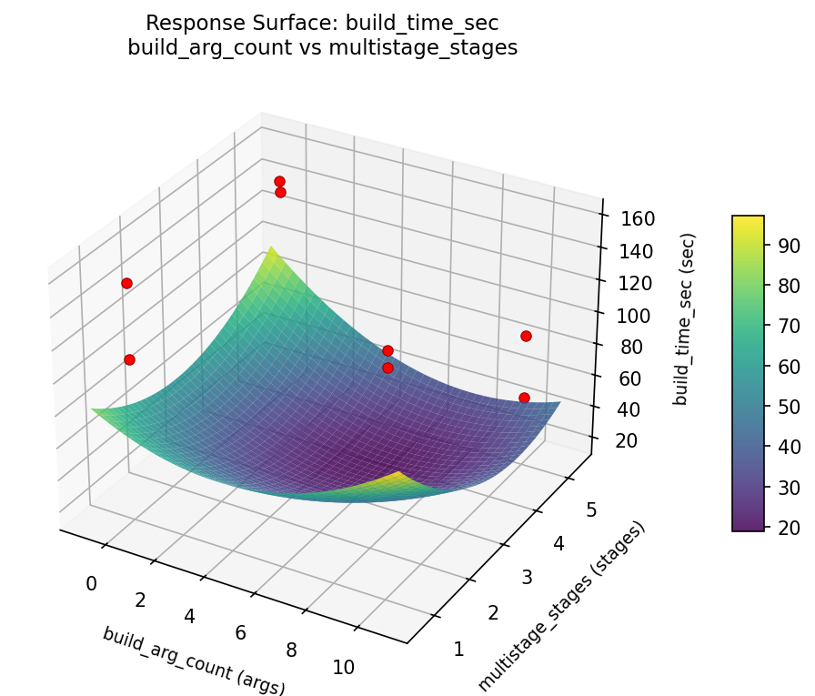
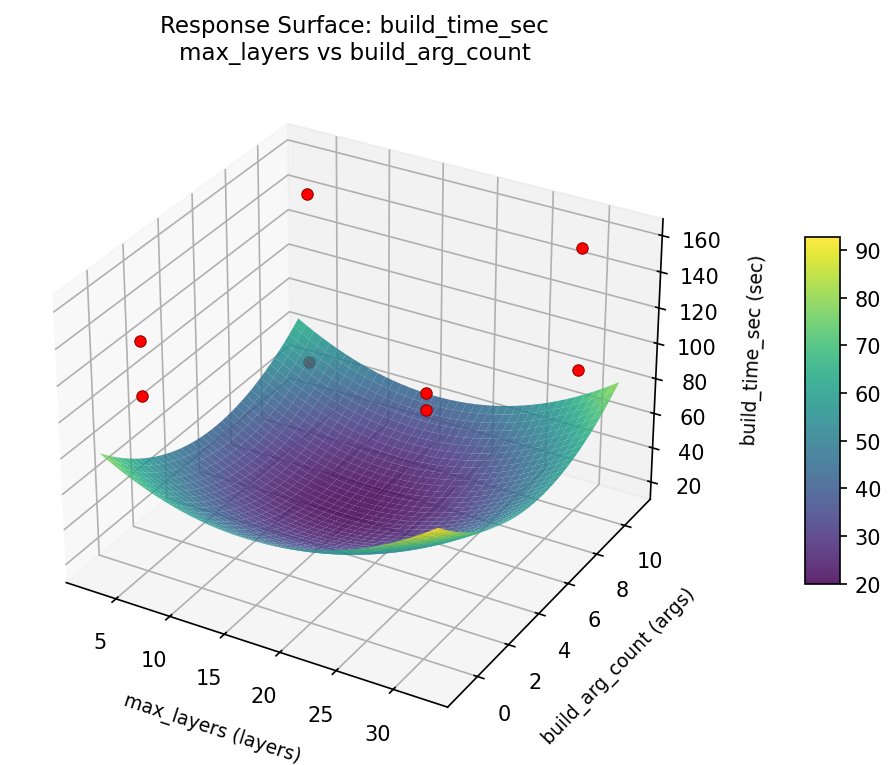
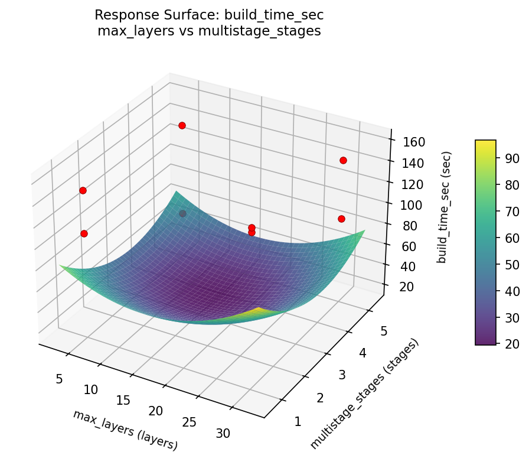
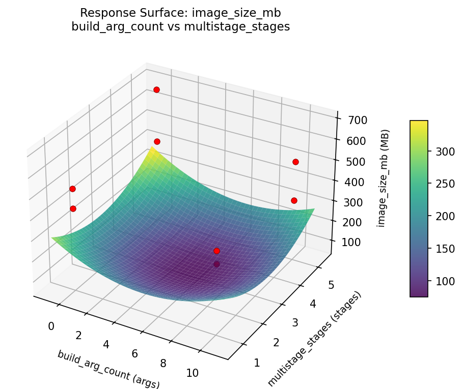

Summary
This experiment investigates docker build layer caching. Fractional factorial of 5 Docker build parameters for build time and image size.
The design varies 5 factors: build cache mode, ranging from inline to registry, max layers (layers), ranging from 5 to 30, squash enabled, ranging from off to on, build arg count (args), ranging from 0 to 10, and multistage stages (stages), ranging from 1 to 5. The goal is to optimize 2 responses: build time sec (sec) (minimize) and image size mb (MB) (minimize). Fixed conditions held constant across all runs include builder = buildkit, registry = ecr.
A fractional factorial design reduces the number of runs from 32 to 8 by deliberately confounding higher-order interactions. This is ideal for screening — identifying which of the 5 factors matter most before investing in a full study.
Key Findings
For build time sec, the most influential factors were build cache mode (31.1%), squash enabled (23.1%), max layers (18.1%). The best observed value was 52.0 (at build cache mode = registry, max layers = 5, squash enabled = on).
For image size mb, the most influential factors were build arg count (43.1%), squash enabled (31.1%), multistage stages (14.8%). The best observed value was 328.0 (at build cache mode = registry, max layers = 5, squash enabled = on).
Recommended Next Steps
- Follow up with a response surface design (CCD or Box-Behnken) on the top 3–4 factors to model curvature and find the true optimum.
- Consider whether any fixed factors should be varied in a future study.
- The screening results can guide factor reduction — drop factors contributing less than 5% and re-run with a smaller, more focused design.
Experimental Setup
Factors
| Factor | Low | High | Unit |
|---|
build_cache_mode | inline | registry | |
max_layers | 5 | 30 | layers |
squash_enabled | off | on | |
build_arg_count | 0 | 10 | args |
multistage_stages | 1 | 5 | stages |
Fixed: builder = buildkit, registry = ecr
Responses
| Response | Direction | Unit |
|---|
build_time_sec | ↓ minimize | sec |
image_size_mb | ↓ minimize | MB |
Configuration
{
"metadata": {
"name": "Docker Build Layer Caching",
"description": "Fractional factorial of 5 Docker build parameters for build time and image size"
},
"factors": [
{
"name": "build_cache_mode",
"levels": [
"inline",
"registry"
],
"type": "categorical",
"unit": ""
},
{
"name": "max_layers",
"levels": [
"5",
"30"
],
"type": "continuous",
"unit": "layers"
},
{
"name": "squash_enabled",
"levels": [
"off",
"on"
],
"type": "categorical",
"unit": ""
},
{
"name": "build_arg_count",
"levels": [
"0",
"10"
],
"type": "continuous",
"unit": "args"
},
{
"name": "multistage_stages",
"levels": [
"1",
"5"
],
"type": "continuous",
"unit": "stages"
}
],
"fixed_factors": {
"builder": "buildkit",
"registry": "ecr"
},
"responses": [
{
"name": "build_time_sec",
"optimize": "minimize",
"unit": "sec"
},
{
"name": "image_size_mb",
"optimize": "minimize",
"unit": "MB"
}
],
"settings": {
"operation": "fractional_factorial",
"test_script": "use_cases/80_docker_build_layer_caching/sim.sh"
}
}
Experimental Matrix
The Fractional Factorial Design produces 8 runs. Each row is one experiment with specific factor settings.
| Run | build_cache_mode | max_layers | squash_enabled | build_arg_count | multistage_stages |
|---|
| 1 | inline | 30 | on | 0 | 1 |
| 2 | registry | 5 | off | 0 | 1 |
| 3 | registry | 30 | off | 10 | 1 |
| 4 | registry | 30 | on | 10 | 5 |
| 5 | inline | 30 | off | 0 | 5 |
| 6 | registry | 5 | on | 0 | 5 |
| 7 | inline | 5 | off | 10 | 5 |
| 8 | inline | 5 | on | 10 | 1 |
Step-by-Step Workflow
1
Preview the design
$ python doe.py info --config use_cases/80_docker_build_layer_caching/config.json
2
Generate the runner script
$ python doe.py generate --config use_cases/80_docker_build_layer_caching/config.json \
--output use_cases/80_docker_build_layer_caching/results/run.sh --seed 42
3
Execute the experiments
$ bash use_cases/80_docker_build_layer_caching/results/run.sh
4
Analyze results
$ python doe.py analyze --config use_cases/80_docker_build_layer_caching/config.json
5
Get optimization recommendations
$ python doe.py optimize --config use_cases/80_docker_build_layer_caching/config.json
6
Multi-objective optimization
With 2 competing responses, use --multi to find the best compromise via Derringer–Suich desirability.
$ python doe.py optimize --config use_cases/80_docker_build_layer_caching/config.json --multi
7
Generate the HTML report
$ python doe.py report --config use_cases/80_docker_build_layer_caching/config.json \
--output use_cases/80_docker_build_layer_caching/results/report.html
Features Exercised
| Feature | Value |
|---|
| Design type | fractional_factorial |
| Factor types | continuous (3), categorical (2) |
| Arg style | double-dash |
| Responses | 2 (build_time_sec ↓, image_size_mb ↓) |
| Total runs | 8 |
Analysis Results
Generated from actual experiment runs using the DOE Helper Tool.
Response: build_time_sec
Top factors: build_cache_mode (31.1%), squash_enabled (23.1%), max_layers (18.1%).
Pareto Chart

Main Effects Plot

Response: image_size_mb
Top factors: build_arg_count (43.1%), squash_enabled (31.1%), multistage_stages (14.8%).
Pareto Chart

Main Effects Plot

Response Surface Plots
3D surfaces fitted with quadratic RSM. Red dots are observed data points.
build time sec build arg count vs multistage stages

build time sec max layers vs build arg count

build time sec max layers vs multistage stages

image size mb build arg count vs multistage stages

image size mb max layers vs build arg count

image size mb max layers vs multistage stages

Multi-Objective Optimization
When responses compete, Derringer–Suich desirability finds the best compromise.
Each response is scaled to a 0–1 desirability, then combined via a weighted geometric mean.
Overall Desirability
D = 0.9545
Per-Response Desirability
| Response | Weight | Desirability | Predicted | Dir |
|---|
build_time_sec |
1.5 |
|
52.00 0.9545 52.00 sec |
↓ |
image_size_mb |
1.0 |
|
328.00 0.9545 328.00 MB |
↓ |
Recommended Settings
| Factor | Value |
|---|
build_cache_mode | registry |
max_layers | 30 layers |
squash_enabled | on |
build_arg_count | 10 args |
multistage_stages | 5 stages |
Source: from observed run #6
Trade-off Summary
Sacrifice = how much worse than single-objective best.
| Response | Predicted | Best Observed | Sacrifice |
|---|
image_size_mb | 328.00 | 328.00 | +0.00 |
Top 3 Runs by Desirability
| Run | D | Factor Settings |
|---|
| #2 | 0.5595 | build_cache_mode=inline, max_layers=5, squash_enabled=off, build_arg_count=10, multistage_stages=5 |
| #4 | 0.5494 | build_cache_mode=inline, max_layers=30, squash_enabled=off, build_arg_count=0, multistage_stages=5 |
Model Quality
| Response | R² | Type |
|---|
image_size_mb | 0.7938 | linear |
Full Multi-Objective Output
============================================================
MULTI-OBJECTIVE OPTIMIZATION
Method: Derringer-Suich Desirability Function
============================================================
Overall desirability: D = 0.9545
Response Weight Desirability Predicted Direction
---------------------------------------------------------------------
build_time_sec 1.5 0.9545 52.00 sec ↓
image_size_mb 1.0 0.9545 328.00 MB ↓
Recommended settings:
build_cache_mode = registry
max_layers = 30 layers
squash_enabled = on
build_arg_count = 10 args
multistage_stages = 5 stages
(from observed run #6)
Trade-off summary:
build_time_sec: 52.00 (best observed: 52.00, sacrifice: +0.00)
image_size_mb: 328.00 (best observed: 328.00, sacrifice: +0.00)
Model quality:
build_time_sec: R² = 0.8285 (linear)
image_size_mb: R² = 0.7938 (linear)
Top 3 observed runs by overall desirability:
1. Run #6 (D=0.9545): build_cache_mode=registry, max_layers=30, squash_enabled=on, build_arg_count=10, multistage_stages=5
2. Run #2 (D=0.5595): build_cache_mode=inline, max_layers=5, squash_enabled=off, build_arg_count=10, multistage_stages=5
3. Run #4 (D=0.5494): build_cache_mode=inline, max_layers=30, squash_enabled=off, build_arg_count=0, multistage_stages=5
Full Analysis Output
=== Main Effects: build_time_sec ===
Factor Effect Std Error % Contribution
--------------------------------------------------------------
build_cache_mode -46.5000 13.3697 31.1%
squash_enabled 34.5000 13.3697 23.1%
max_layers 27.0000 13.3697 18.1%
multistage_stages 26.0000 13.3697 17.4%
build_arg_count -15.5000 13.3697 10.4%
=== ANOVA Table: build_time_sec ===
Source DF SS MS F p-value
-----------------------------------------------------------------------------
build_cache_mode 1 4324.5000 4324.5000 2.132 0.2040
max_layers 1 1458.0000 1458.0000 0.719 0.4352
squash_enabled 1 2380.5000 2380.5000 1.174 0.3281
build_arg_count 1 480.5000 480.5000 0.237 0.6470
multistage_stages 1 1352.0000 1352.0000 0.667 0.4513
build_cache_mode*max_layers 1 480.5000 480.5000 0.237 0.6470
build_cache_mode*squash_enabled 1 1352.0000 1352.0000 0.667 0.4513
build_cache_mode*build_arg_count 1 1458.0000 1458.0000 0.719 0.4352
build_cache_mode*multistage_stages 1 2380.5000 2380.5000 1.174 0.3281
max_layers*squash_enabled 1 12.5000 12.5000 0.006 0.9405
max_layers*build_arg_count 1 4324.5000 4324.5000 2.132 0.2040
max_layers*multistage_stages 1 2.0000 2.0000 0.001 0.9762
squash_enabled*build_arg_count 1 2.0000 2.0000 0.001 0.9762
squash_enabled*multistage_stages 1 4324.5000 4324.5000 2.132 0.2040
build_arg_count*multistage_stages 1 12.5000 12.5000 0.006 0.9405
Error (Lenth PSE) 5 10140.0000 2028.0000
Total 7 10010.0000 1430.0000
Note: Error estimated using Lenth's pseudo-standard-error (unreplicated design)
=== Interaction Effects: build_time_sec ===
Factor A Factor B Interaction % Contribution
------------------------------------------------------------------------
max_layers build_arg_count 46.5000 22.9%
squash_enabled multistage_stages -46.5000 22.9%
build_cache_mode multistage_stages 34.5000 17.0%
build_cache_mode build_arg_count -27.0000 13.3%
build_cache_mode squash_enabled 26.0000 12.8%
build_cache_mode max_layers 15.5000 7.6%
max_layers squash_enabled 2.5000 1.2%
build_arg_count multistage_stages -2.5000 1.2%
max_layers multistage_stages 1.0000 0.5%
squash_enabled build_arg_count -1.0000 0.5%
=== Summary Statistics: build_time_sec ===
build_cache_mode:
Level N Mean Std Min Max
------------------------------------------------------------
inline 4 148.2500 8.3016 139.0000 159.0000
registry 4 101.7500 42.7346 52.0000 155.0000
max_layers:
Level N Mean Std Min Max
------------------------------------------------------------
30 4 111.5000 42.7902 52.0000 146.0000
5 4 138.5000 31.9322 91.0000 159.0000
squash_enabled:
Level N Mean Std Min Max
------------------------------------------------------------
off 4 107.7500 44.9694 52.0000 149.0000
on 4 142.2500 22.8236 109.0000 159.0000
build_arg_count:
Level N Mean Std Min Max
------------------------------------------------------------
0 4 132.7500 28.5934 91.0000 155.0000
10 4 117.2500 48.5687 52.0000 159.0000
multistage_stages:
Level N Mean Std Min Max
------------------------------------------------------------
1 4 112.0000 49.6857 52.0000 159.0000
5 4 138.0000 20.4287 109.0000 155.0000
=== Main Effects: image_size_mb ===
Factor Effect Std Error % Contribution
--------------------------------------------------------------
build_arg_count -148.5000 39.1635 43.1%
squash_enabled 107.0000 39.1635 31.1%
multistage_stages -51.0000 39.1635 14.8%
build_cache_mode -31.5000 39.1635 9.1%
max_layers -6.5000 39.1635 1.9%
=== ANOVA Table: image_size_mb ===
Source DF SS MS F p-value
-----------------------------------------------------------------------------
build_cache_mode 1 1984.5000 1984.5000 0.667 0.4513
max_layers 1 84.5000 84.5000 0.028 0.8728
squash_enabled 1 22898.0000 22898.0000 7.692 0.0392
build_arg_count 1 44104.5000 44104.5000 14.816 0.0120
multistage_stages 1 5202.0000 5202.0000 1.748 0.2434
build_cache_mode*max_layers 1 44104.5000 44104.5000 14.816 0.0120
build_cache_mode*squash_enabled 1 5202.0000 5202.0000 1.748 0.2434
build_cache_mode*build_arg_count 1 84.5000 84.5000 0.028 0.8728
build_cache_mode*multistage_stages 1 22898.0000 22898.0000 7.692 0.0392
max_layers*squash_enabled 1 10368.0000 10368.0000 3.483 0.1210
max_layers*build_arg_count 1 1984.5000 1984.5000 0.667 0.4513
max_layers*multistage_stages 1 1250.0000 1250.0000 0.420 0.5456
squash_enabled*build_arg_count 1 1250.0000 1250.0000 0.420 0.5456
squash_enabled*multistage_stages 1 1984.5000 1984.5000 0.667 0.4513
build_arg_count*multistage_stages 1 10368.0000 10368.0000 3.483 0.1210
Error (Lenth PSE) 5 14883.7500 2976.7500
Total 7 85891.5000 12270.2143
Note: Error estimated using Lenth's pseudo-standard-error (unreplicated design)
=== Interaction Effects: image_size_mb ===
Factor A Factor B Interaction % Contribution
------------------------------------------------------------------------
build_cache_mode max_layers 148.5000 26.1%
build_cache_mode multistage_stages 107.0000 18.8%
max_layers squash_enabled -72.0000 12.6%
build_arg_count multistage_stages 72.0000 12.6%
build_cache_mode squash_enabled -51.0000 8.9%
max_layers build_arg_count 31.5000 5.5%
squash_enabled multistage_stages -31.5000 5.5%
max_layers multistage_stages 25.0000 4.4%
squash_enabled build_arg_count -25.0000 4.4%
build_cache_mode build_arg_count 6.5000 1.1%
=== Summary Statistics: image_size_mb ===
build_cache_mode:
Level N Mean Std Min Max
------------------------------------------------------------
inline 4 482.0000 139.5206 374.0000 687.0000
registry 4 450.5000 92.2117 328.0000 526.0000
max_layers:
Level N Mean Std Min Max
------------------------------------------------------------
30 4 469.5000 152.9891 328.0000 687.0000
5 4 463.0000 72.0879 374.0000 526.0000
squash_enabled:
Level N Mean Std Min Max
------------------------------------------------------------
off 4 412.7500 81.4918 328.0000 517.0000
on 4 519.7500 119.8204 431.0000 687.0000
build_arg_count:
Level N Mean Std Min Max
------------------------------------------------------------
0 4 540.5000 106.4534 432.0000 687.0000
10 4 392.0000 50.9575 328.0000 435.0000
multistage_stages:
Level N Mean Std Min Max
------------------------------------------------------------
1 4 491.7500 151.4318 328.0000 687.0000
5 4 440.7500 62.9676 374.0000 526.0000
Optimization Recommendations
=== Optimization: build_time_sec ===
Direction: minimize
Best observed run: #6
build_cache_mode = registry
max_layers = 5
squash_enabled = on
build_arg_count = 0
multistage_stages = 5
Value: 52.0
RSM Model (linear, R² = 0.8793, Adj R² = 0.5774):
Coefficients:
intercept +125.0000
build_cache_mode -6.2500
max_layers +15.7500
squash_enabled -12.7500
build_arg_count -0.5000
multistage_stages -25.5000
Predicted optimum (from linear model, at observed points):
build_cache_mode = registry
max_layers = 30
squash_enabled = off
build_arg_count = 10
multistage_stages = 1
Predicted value: 172.2500
Surface optimum (via L-BFGS-B, linear model):
build_cache_mode = registry
max_layers = 5
squash_enabled = on
build_arg_count = 10
multistage_stages = 5
Predicted value: 64.2500
Model quality: Good fit — general trends are captured, some noise remains.
Factor importance:
1. multistage_stages (effect: -51.0, contribution: 42.0%)
2. max_layers (effect: -31.5, contribution: 25.9%)
3. squash_enabled (effect: -25.5, contribution: 21.0%)
4. build_cache_mode (effect: -12.5, contribution: 10.3%)
5. build_arg_count (effect: -1.0, contribution: 0.8%)
=== Optimization: image_size_mb ===
Direction: minimize
Best observed run: #6
build_cache_mode = registry
max_layers = 5
squash_enabled = on
build_arg_count = 0
multistage_stages = 5
Value: 328.0
RSM Model (linear, R² = 0.7391, Adj R² = 0.0870):
Coefficients:
intercept +466.2500
build_cache_mode -36.2500
max_layers +15.5000
squash_enabled -75.0000
build_arg_count -12.5000
multistage_stages +24.5000
Predicted optimum (from linear model, at observed points):
build_cache_mode = inline
max_layers = 30
squash_enabled = off
build_arg_count = 0
multistage_stages = 5
Predicted value: 630.0000
Surface optimum (via L-BFGS-B, linear model):
build_cache_mode = registry
max_layers = 5
squash_enabled = on
build_arg_count = 10
multistage_stages = 1
Predicted value: 302.5000
Model quality: Good fit — general trends are captured, some noise remains.
Factor importance:
1. squash_enabled (effect: -150.0, contribution: 45.8%)
2. build_cache_mode (effect: -72.5, contribution: 22.1%)
3. multistage_stages (effect: 49.0, contribution: 15.0%)
4. max_layers (effect: -31.0, contribution: 9.5%)
5. build_arg_count (effect: -25.0, contribution: 7.6%)